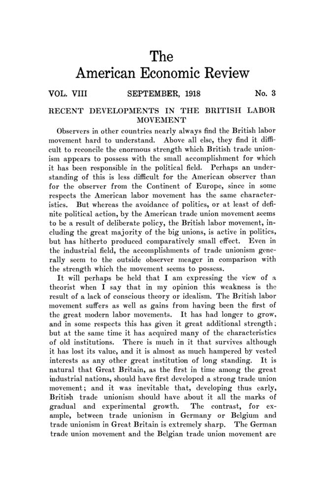

Cole, 1918: o trabalhismo britânico entre o ofício e o controle
Leitura: 9 min
G. D. H. Cole explica por que os sindicatos britânicos, fortes na indústria, pesavam pouco na política, e descreve a reorganização do Partido Trabalhista em 1918 e a reivindicação de controle da indústria.


A Workers' Union tinha 5 mil membros em 1910. Quando G. D. H. Cole escreve, em 1918, tem pelo menos 350 mil, e a federação dos sindicatos gerais à qual pertence reúne bem mais de 700 mil. O crescimento dos trabalhadores sem qualificação formal é, para Cole, o fato mais marcante do sindicalismo britânico durante a guerra, e o ponto de partida para explicar um movimento que observadores estrangeiros achavam difícil de entender.
O artigo, assinado no Magdalen College, em Oxford, abre o número de setembro de 1918 da American Economic Review. Cole não esconde sua posição: declara-se membro dos National Guildsmen e diz que, em questões de política trabalhista, há muito se opõe a Sidney Webb e aos fabianos. O texto é ao mesmo tempo descrição e programa.
Por que a força sindical não virava força política?
O paradoxo de partida é este: os sindicatos britânicos pareciam enormemente fortes, mas sua realização política era pequena, e mesmo na indústria parecia modesta diante da força aparente. Nos Estados Unidos, observa Cole, a distância em relação à política resultava de uma política deliberada; na Grã-Bretanha, a maioria dos grandes sindicatos estava na política e, ainda assim, produzia pouco efeito.
Sua explicação, que ele admite ser a de um teórico, é a falta de teoria consciente ou de idealismo. O movimento britânico ganhou e perdeu por ter sido o primeiro: cresceu por mais tempo, mas adquiriu os traços das instituições antigas, com práticas que sobrevivem depois de perder o valor e interesses criados que o travam. Os movimentos da Alemanha e da Bélgica, ao contrário, foram construídos segundo um modelo, com base numa teoria da organização e nas lições da experiência britânica.
Como o sindicalismo britânico se dividiu?
Em meados do século XIX, o sindicalismo estava quase todo restrito aos ofícios qualificados, cujos líderes consideravam ilusório organizar os menos qualificados. O socialismo dos anos 1880 trouxe uma teoria mais ampla, e a greve das docas de 1889 provou que a organização dos não qualificados era possível, ao menos por um tempo. Os sindicatos estabelecidos não abriram suas fileiras, e os não qualificados formaram organizações próprias, mais marcadas pelas ideias novas. Com o tempo, essas organizações ganharam a mesma estreiteza dos sindicatos de ofício.
“O sindicato geral tornou-se um sindicato de ofício de trabalhadores sem ofício.” (“The General Labour Union became a craft union of workers without craft.”)
O resultado era um conjunto de cerca de 1.100 sindicatos separados, federados de muitas maneiras, mas concorrentes e sobrepostos. Havia disputas de demarcação entre ofícios sobre quem fazia que tipo de trabalho e, em muitos casos, meia dúzia de sindicatos tentando organizar exatamente a mesma categoria. A indústria mecânica, centro dos conflitos dos anos anteriores, era o caso mais grave.
Sobre essa divisão sobrepunha-se a disputa entre sindicalismo de ofício e sindicalismo industrial, que os leitores americanos conheciam da American Federation of Labor. Os mineiros e os ferroviários sempre tenderam à organização por indústria, e em 1918 a Miners' Federation, de longe a organização mais forte do país, e a National Union of Railwaymen, fundada em 1913 pela fusão de três dos cinco sindicatos ferroviários, defendiam o princípio industrial. Nos têxteis, os sindicatos de ofício abrangiam a maior parte do pessoal; nos metais, a separação entre qualificados, formados por aprendizado, e não qualificados era nítida. Cole pondera que o quadro, visto pela teoria, é um caos, mas que na prática muitos sindicatos eram muito fortes e suas disputas não punham em risco o interesse comum.
Que partido saiu desse sindicalismo?
A entrada do trabalho na política foi, segundo Cole, em grande parte obra do acaso. Os primeiros deputados operários eram membros liberais que também eram homens do trabalho. Em 1899, o crescimento do movimento socialista forçou o Trades Union Congress a criar o Labour Representation Committee, que disputou a eleição de 1900, mas o partido só contou na Câmara dos Comuns a partir de 1906. Mesmo então, dezessete deputados ligados à Miners' Federation ficaram fora dele, aliados aos liberais, até que a federação aderiu em 1908.
A coesão de 1906 veio da ameaça da decisão Taff Vale, que tornara o direito de greve em grande parte ineficaz. Fora disso, cada membro tendia a ver as questões pelo prisma de seu ofício e de sua organização. Dizia-se que o partido não era consciente da classe, mas do ofício. A ala socialista, representada pelo Independent Labour Party e pelos fabianos, tinha uma teoria, mas exclusivamente política: para ela, os males sociais se curavam com as leis certas, bem administradas. A ala sindical, na maior parte, não tinha teoria alguma. Durante a guerra, essa dualidade se acentuou e, com a entrada de representantes trabalhistas no governo Lloyd George, chegou-se a prever a ruptura.
No último ano, porém, a unidade virou palavra de ordem, no congresso sindical de Blackpool, em setembro de 1917, e na conferência de Nottingham, em janeiro de 1918. A divisão sobre a Conferência de Estocolmo foi resolvida por um compromisso aceito pelas duas alas.
O que muda com a nova constituição?
A Representation of the People act, de 1918, pôs nas listas eleitorais pelo menos 5 milhões de mulheres e 2 milhões de novos eleitores homens. O partido podia manter a organização formal e falhar com o novo eleitorado, ou refazer-se para atraí-lo. Escolheu fortalecer os partidos locais, que passaram a admitir homens e mulheres simpatizantes como membros individuais, sem vínculo com os sindicatos ou sociedades filiadas. Nos círculos sindicais, a proposta foi criticada por abrir a porta aos não sindicalizados e aos intelectuais; foi aprovada por grande maioria. As decisões de política, no entanto, continuaram com as grandes uniões, que mantinham o voto preponderante nas conferências.
Dois grupos ganhavam com a mudança. As mulheres, das quais pelo menos 600 mil estavam sindicalizadas na Inglaterra, quase sempre em sindicatos mistos governados pelos homens, teriam na Women's Labour League, absorvida pela máquina partidária, um ponto de reunião. E os intelectuais, termo em que Cole inclui profissionais liberais, assalariados de nível médio, funcionários públicos e soldados de classe média cansados dos velhos partidos.
Junto com a nova constituição veio o memorando “Labour in the New Social Order”, que Cole atribui a Sidney Webb. O texto pedia tributação drástica, uma contribuição sobre o capital e grandes gastos em reformas sociais. Cole o descreve como vinho velho em odres novos: a ideia fabiana de nacionalização, municipalização e controle estatal, concentrada na prevenção da miséria.
“A força motriz dessa ideia não é a abolição da pobreza; é a realização da liberdade.” (“The driving force behind this idea is not the abolition of poverty; it is the realization of freedom.”)
O que querem as bases?
Cole atribui a força das alas mais radicais à difusão da educação entre os trabalhadores. De um lado estava o Central Labour College, com sua organização auxiliar, a Plebs League, que ensinava economia marxista e sindicalismo industrial em cursos espalhados pelas cidades de província; de outro, a Workers' Educational Association, que, com comitês das universidades, oferecia cursos sem filiação partidária e formava igualmente militantes e dirigentes. O primeiro acusava o segundo de ensinar economia e história burguesas.
Em qualquer reunião trabalhista local, diz Cole, a discussão sobre o pós-guerra acabava no controle da indústria: salários, horas e arbitragem compulsória levavam alguém a dizer que a chave estava no grau de controle que os trabalhadores exerciam sobre a oficina e a indústria. O Whitley Report, de um comitê do governo endossado pelo gabinete de guerra, e os artigos do Times respondiam com a oferta de controle conjunto entre empregadores e sindicatos. Para Cole, a demanda era outra: a transferência de parte do poder do capital para as organizações operárias.
A expressão prática dessa demanda era o movimento dos shop stewards, sobretudo na indústria mecânica. Com os sindicatos em parte desarmados pela guerra, os trabalhadores de cada fábrica escolheram delegados próprios, que formaram comitês de oficina, de fábrica e às vezes de distrito. O movimento era quase todo extraoficial e improvisado, com pessoal muitas vezes inexperiente, mas Cole o considera destinado a permanecer, por ter encontrado o elo que faltava à organização sindical: a oficina.
Guildas ou sindicalismo industrial?
Duas correntes teóricas davam forma à ideia de controle. Os sindicalistas industriais queriam abolir o Estado e substituí-lo por uma sociedade puramente industrial; os socialistas de guildas defendiam um Estado democrático ao lado de uma indústria autogovernada pelos trabalhadores. Cole aposta nos guildistas, menos dogmáticos e com apoio crescente entre os jovens sindicalistas e intelectuais. Se os sindicatos se apegassem às ideias do século passado, o sindicalismo industrial extremo ganharia terreno como reação; se se adaptassem, a nova orientação provavelmente seria o socialismo de guildas. Cole admite que sua aposta se deve em parte a ser ele mesmo guildista e, em parte, a ser otimista por natureza.
Na minha leitura
Na minha leitura, o artigo é sobretudo uma análise de estrutura organizacional. Cole mostra como uma regra de filiação, o sindicato por ofício, produz concorrência entre organizações que deveriam cooperar, disputas de demarcação e um partido em que cada deputado fala por sua categoria. O problema que descreve é o de ação coletiva entre grupos com interesses parcialmente divergentes, e a solução que propõe é mudar a unidade de organização, da categoria para a oficina e a indústria.
A distinção entre controle conjunto e transferência de controle é o ponto econômico central. O controle conjunto mantém os direitos de decisão do capital e acrescenta canais de consulta; a transferência muda quem decide. É a mesma questão que a economia das organizações trata ao discutir a alocação de direitos de controle residual, e que voltaria nos debates sobre conselhos de empresa e codeterminação.
Glossário
- Sindicato de ofício (craft union)
- sindicato que reúne trabalhadores de uma mesma qualificação, qualquer que seja a indústria.
- Sindicato geral
- sindicato aberto a trabalhadores sem qualificação formal de várias indústrias.
- Sindicalismo industrial
- organização de todos os trabalhadores de uma indústria num mesmo sindicato.
- Disputa de demarcação
- conflito entre sindicatos sobre qual ofício tem direito a determinado trabalho ou categoria.
- Decisão Taff Vale
- decisão judicial que responsabilizou um sindicato pelos prejuízos de uma greve.
- Fabianismo
- corrente socialista britânica que defendia reformas graduais por meio da legislação e da administração pública.
- Shop stewards
- delegados eleitos pelos trabalhadores dentro de cada oficina ou fábrica.
- Whitley Report
- relatório de um comitê do governo britânico que propôs conselhos conjuntos de empregadores e empregados.
- Socialismo de guildas
- corrente que propunha a autogestão da indústria pelos trabalhadores ao lado de um Estado democrático.
Fontes
- Recent Developments in the British Labor Movement — G. D. H. Cole (Magdalen College, Oxford) (pp. 485–504). JSTOR · Internet Archive (PDF)
- Edição completa, com os demais artigos: Nº 153 do Arquivo.
Documento em domínio público (EUA, publicado antes de 1931), via JSTOR Early Journal Content e Internet Archive. Resumo e comentário do autor deste site, sem afiliação com a American Economic Association. Encontrou um erro? Escreva: a correção é publicada no próprio texto, com data.
↑ Nº 153 · O trabalhismo britânico, a liga dos agricultores e a sombra das finanças Plehn, 1918: o custo real da guerra e sua sombra em dinheiro →